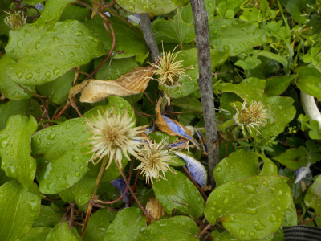
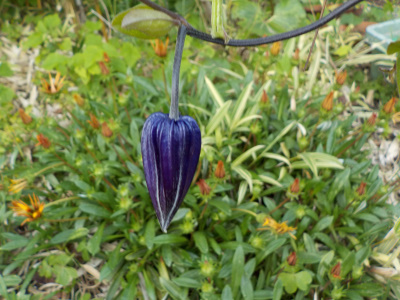
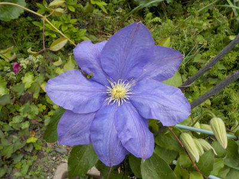
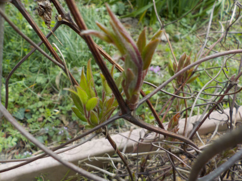
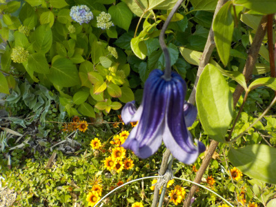
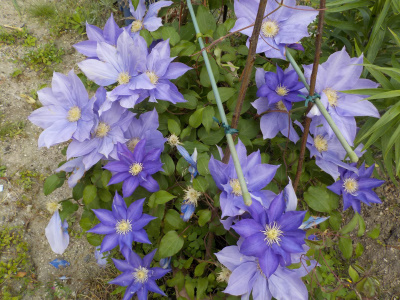
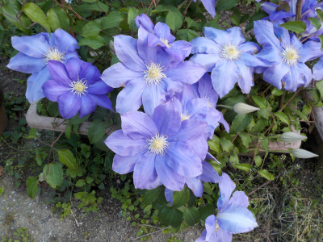
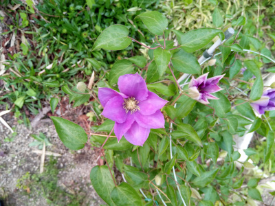
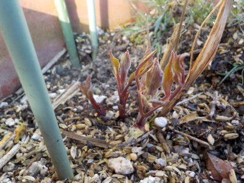
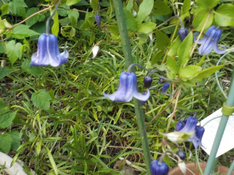

遊びで植物を育てよう
2023/05/13
明日は母の日ですが、クレマチスの花はほぼ終わっています。

篭口は少し咲いていますが、カザグルマは終わりました。
クレマチスは母の日の咲いてて欲しい花なんですが残念です。今年は第二日曜日が14日で遅かったので仕方ないかな。
【クレマチスTOP】
【花TOP】
【園芸TOP】
2023/05/08
クレマチスの篭口が開花しそうです。

もうちょっとで開きますね。明日には咲くかな。
梅雨になったら挿し芽をしようかと思っています。
【クレマチスTOP】
【花TOP】
【園芸TOP】
2023/04/23
クレマチスが開花しました。

花が大きいので見ごたえがあります。
このタイプは日本の種類でカザグルマって言うみたいです。
【クレマチスTOP】
【花TOP】
【園芸TOP】
2023/03/12
クレマチスの新芽が出ました。

枯れたようなツルから新芽が出ました。
これから天気が続くと水やりが必要になりますね。
【クレマチスTOP】
【花TOP】
【園芸TOP】
2022/05/22
巨大な篭口の花が咲きました。

篭口の花が1つ咲いたんですが、花がとても大きいです。
1つだけなので、栄養が集中して大きくなったのかな？
いつもこれくらい大きいと花が目立っていいんだけどな。
【クレマチスTOP】
【花TOP】
【園芸TOP】
2022/05/08
母の日のクレマチス。

ピークを越えて花が散りだしました。それでも沢山咲いているのでまだまだキレイです。
このプランターの株は年々大きくなっていて花の数が増えていますが、これくらいが限界かな？
このクレマチスは母の日くらいに咲くのでとってもいい。なんかの原因で枯れてもいいように、挿し芽して予備を作っておきたいです。
【クレマチスTOP】
【花TOP】
【園芸TOP】
2022/05/05
クレマチスは人の目を引くようです。

このプランターは今年も青い花が咲きました。
今の時期は色んな花が咲いていますが、これが一番目立つみたいです。
【クレマチスTOP】
【花TOP】
【園芸TOP】
2022/04/27
今年のクレマチスは赤紫です。

今までずーっと青紫の花だったんですが、今年はなぜか赤紫で咲きました。
これはこれでキレイでいいかな。あと、花の大きさがちょっと小さいかな。
【クレマチスTOP】
【花TOP】
【園芸TOP】
2022/03/06
クレマチスの芽が出ました。

クレマチスは冬にツルが枯れるものと枯れないものがあって、これは枯れるほうです。
どっちがいいってコトはないです。
【クレマチスTOP】
【花TOP】
【園芸TOP】
2021/08/22
クレマチスが調子よく咲いています。

次々と咲いていい感じです。
ツル伏せで増やしたいですが。ツルが上に向って伸びているので地面に付ける事が出来ません。
何かいいアイデアがないか調べてみようと思います。
【クレマチスTOP】
【花TOP】
【園芸TOP】
2021/07/18
クレマチスの挿し芽が枯れました。
2021/07/03
クレマチスの挿し芽をしました。
2021/05/02
クレマチスの花はもうすぐ散ってなくなりそう。
2021/04/24
クレマチスが咲きだしました。
2021/03/28
クレマチスの種蒔きをしました。
2021/03/14
クレマチスのツル伏せが成功したようです。
2021/02/21
クレマチスの芽が2本出ました。
2020/09/27
今の時期にやっていいかわからないですが、クレマチスのツル伏せをしました。
2020/09/13
またまたクレマチスの挿し木に失敗しました。
2020/07/04
またクレマチスの挿し木に挑戦です。
【クレマチスTOP】
【花TOP】
【園芸TOP】
2020/06/07
クレマチスの挿し木は失敗です。
2020/05/10
今年は母の日用ギフトでクレマチスを見なかったかも。
2020/04/25
クレマチスの挿し木をしました。
2019/11/02
スポンジ挿し木の途中経過
2019/10/27
クレマチスの種ができたかな？
2019/10/20
1週間前にクレマチスの水挿しをしました。
2019/09/23
クレマチスのペットボトル挿し木は失敗しました。
2019/08/08
クレマチスの篭口の種があまりできません。
2019/07/15
クレマチスが2回目の開花シーズンです。
2019/06/30
ペットボトルでクレマチスの挿し木。
【クレマチスTOP】
【花TOP】
【園芸TOP】
畑仕事じゃないよ。
【おいしいものを食べよう。】【たくさん寝よう。】
【ソロ活をしよう!】【季節感のあることをしよう。】【動画視聴はほどほどに。】【当サイトの全てのコンテンツは無断転載禁止です。】